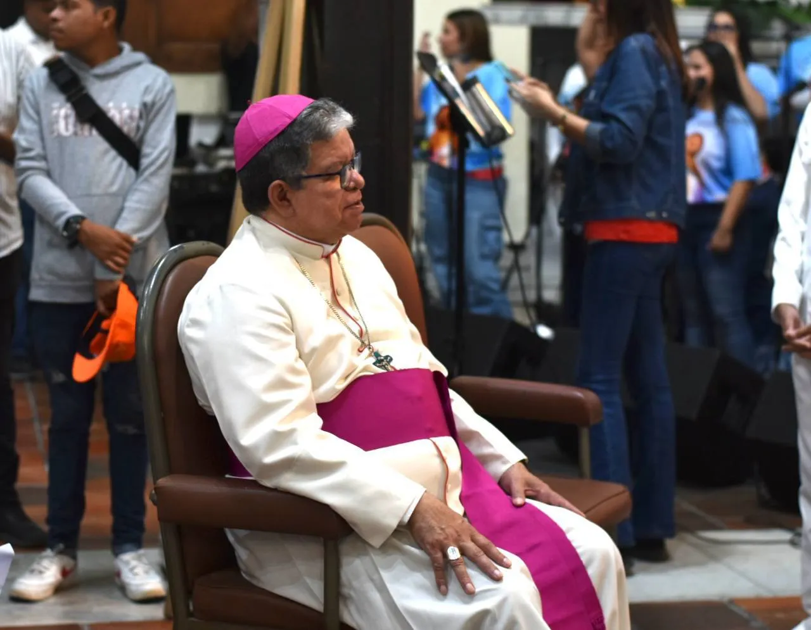
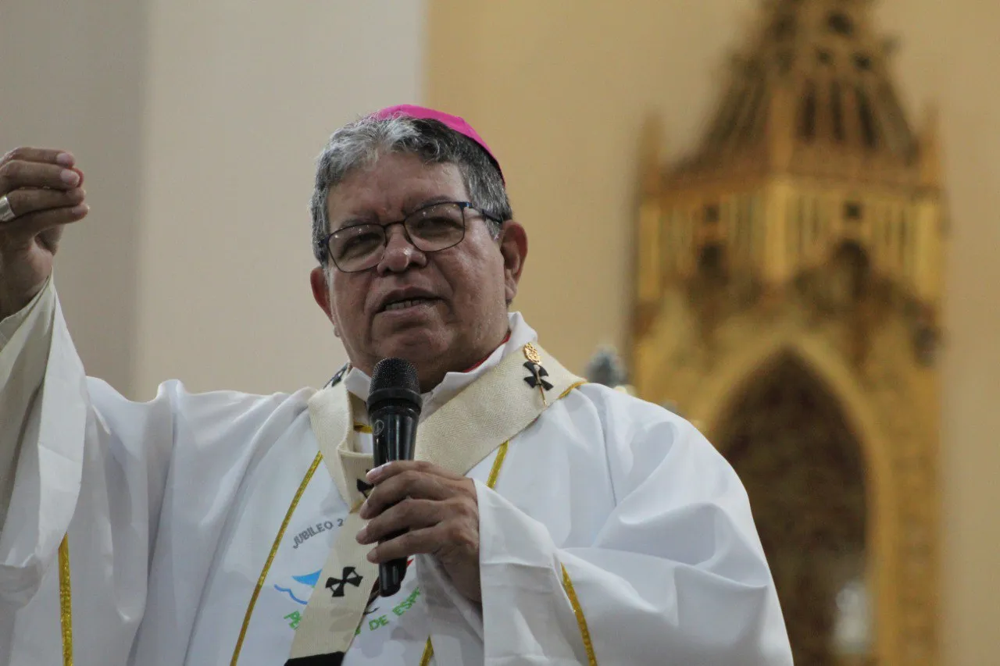
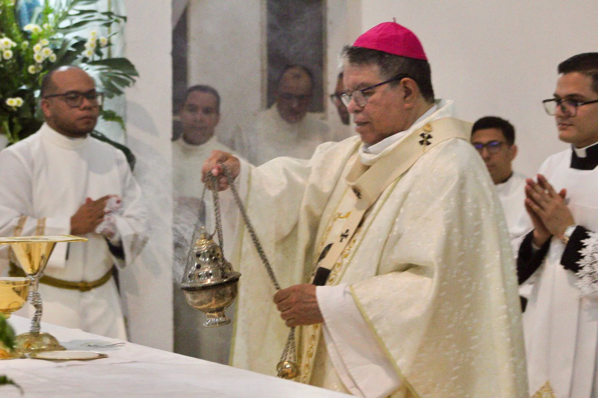
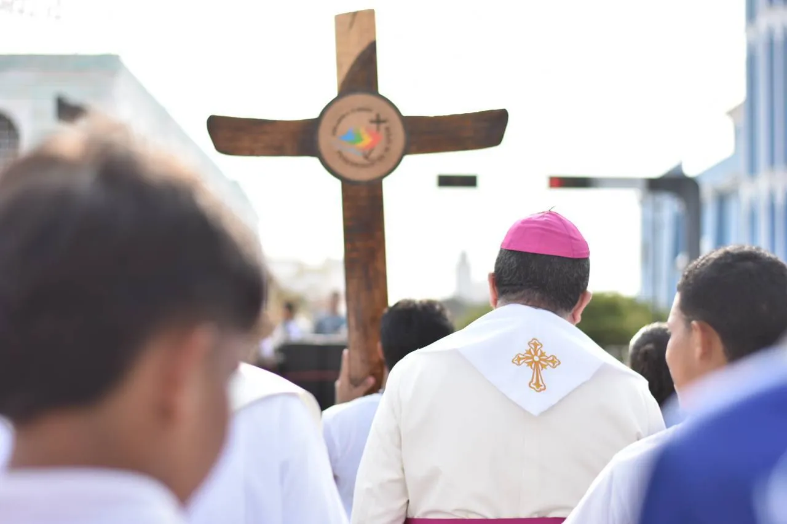
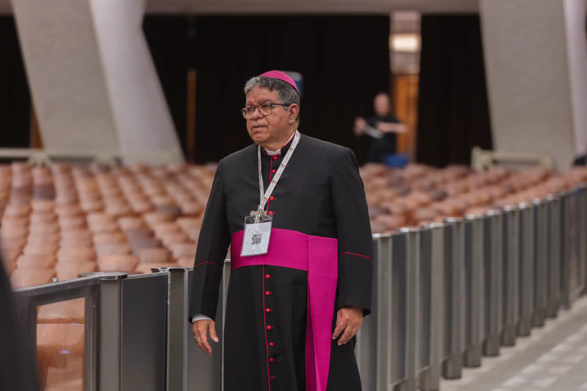

Semblanza Biográfica
Nació en Valera, estado Trujillo, el 6 de diciembre de 1957. Realizó sus estudios de filosofía en el Seminario Interdiocesano "Santa Rosa de Lima" en Caracas, y de teología en la Pontificia Universidad Gregoriana en Roma, donde obtuvo la Licenciatura en Teología Fundamental.
Lic. Teología Fundamental
Pontificia Universidad Gregoriana, Roma
Ex-Presidente CEV & Vicepresidente CELAM
Presidente de Cáritas Venezuela
Fue ordenado sacerdote el 5 de mayo de 1984. Durante su ejercicio sacerdotal se desempeñó como párroco en diversas comunidades y fue Director Diocesano de la Catequesis y Pastoral Social.
El Papa Juan Pablo II lo nombró obispo titular de Itálica y auxiliar de la Arquidiócesis de Barquisimeto en 1999. Posteriormente sirvió como Obispo de El Vigía-San Carlos del Zulia (2006-2013) y Obispo de Barinas (2013-2018).
El 24 de mayo de 2018, el Papa Francisco lo nombró Arzobispo de Maracaibo. Además de su labor pastoral local, ha ocupado cargos de suma importancia como Presidente de la Conferencia Episcopal Venezolana (2018-2022), Primer Vicepresidente del CELAM (desde 2023) y Presidente de Cáritas Venezuela.
Trayectoria
Ordenación Sacerdotal
Ordenado presbítero el 5 de mayo. Párroco y Director Diocesano de Catequesis y Pastoral Social.
Obispo Auxiliar
Nombrado obispo auxiliar de Barquisimeto (con el título de obispo titular de Itálica) por el Papa Juan Pablo II.
Obispo Diocesano
Obispo de El Vigía-San Carlos del Zulia (2006-2013) y Obispo de Barinas (2013-2018).
Arzobispo de Maracaibo
Nombrado por el Papa Francisco el 24 de mayo. Presidente de la CEV (2018-2022).
Labor Pastoral
Una misión activa fundamentada en la cercanía, la caridad y la formación constante de nuestra feligresía.

Visitas a Comunidades
Encuentro constante con la feligresía de las distintas parroquias zulianas.
Celebraciones Eucarísticas
Presidiendo las principales misas, fiestas patronales y sacramentos.

Trabajo Social y Cáritas
Liderando iniciativas de apoyo a los más vulnerables y necesitados.

Acompañamiento al Clero
Orientación, cercanía y apoyo a los sacerdotes de la Arquidiócesis.

Pastoral Juvenil
Promoviendo la participación e integración de los jóvenes en la Iglesia.


Representación en la Iglesia Universal
Activa participación en el CELAM fortaleciendo la comunión eclesial continental. Primer Vicepresidente del CELAM y Presidente de Cáritas Venezuela.
"Nuestra misión en Maracaibo es ser una Iglesia de puertas abiertas, donde la fe se traduce en caridad operante y esperanza para cada familia zuliana."
Cartas Pastorales y Homilías
Acceda a los documentos, decretos y mensajes del Arzobispo a la feligresía marabina.